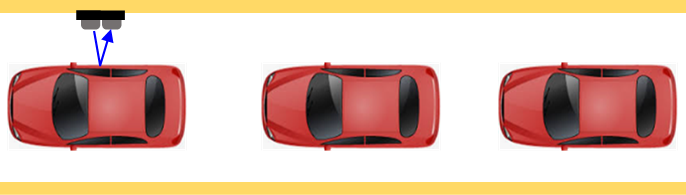

Mesure de distance
HC-SR04

Le module HC-SR04 est un capteur ultrasonique utilisé pour mesurer des distances. Voici ses spécification techniques :
- Alimentation: 5V DC
- Courant de fonctionnement: 15 mA
- Fréquence ultrasonique: 40 kHz
- Portée de mesure: 2 cm à 400 cm
- Précision: ±3 mm
- Angle de mesure: 15 degrés
Son principe de fonctionnement est assez simple:

- Il possède un émetteur et un récepteur ultrasoniques (Haut parleur, microphone),
- Quand on lui applique une impulsion de 10µs (ou +) sur la broche Trig, il transmet une onde sonore (8 périodes à 40 kHz),
- L'onde sonore se propage dans l'air jusqu'à rencontrer un obstacle, puis elle est réfléchie vers le capteur
- Le transducteur de réception capte l'ondes réfléchie,
- Le module délivre une impulsion dont la largeur est est égale au temps de propagation (aller/retour) sur la broche Echo. Ce temps est souvent appelé temps de vol
- Il suffit ensuite de mesurer la durée de cette impulsion et d'en déduire la distance :
- La vitesse du son est généralement prise comme 344 m/s à température ambiante

Exemple basique
Chaque 1/2 seconde, on effectue une mesure de distance et on affiche le résultat sur le moniteur série
Mesurer la distance toutes les 1/2 secondes
#define trigPin 7
#define echoPin 6
void setup() {
pinMode(trigPin, OUTPUT);
pinMode(echoPin, INPUT);
digitalWrite(trigPin, LOW);
Serial.begin(9600);
}
void loop() {
delay(500);
digitalWrite(trigPin, HIGH);
delayMicroseconds(10);
digitalWrite(trigPin, LOW);
float Tus = pulseIn(echoPin, HIGH); // temps en µs
float Dcm = Tus * 0.0344 / 2; // distance en cm
Serial.print(Dcm,1);
Serial.print(" Cm ");
}
Compteur de passages
On va par exemple compter les voitures à l'entrée d'un parking
La largeur du passage fait que les voiture passent à proximité du capteur (disons D = 1m à 2m).
On mesure continuellement la distance, si inférieur à D => présence obstacle
Compteur de passage
#define trigPin 12
#define echoPin 11
#define TRIG_D 100 // Intervalle de détection en cm
#define TRIG_T TRIG_D*2/0.0344 // temps de vol correspondant (µs)
#define LED 13
#include
LCD_I2C lcd(0x27, 16, 2);
int CTR = 0, newState, oldState;
void setup() {
pinMode(trigPin, OUTPUT);
pinMode(echoPin, INPUT);
pinMode(LED, OUTPUT);
digitalWrite(LED, LOW);
digitalWrite(trigPin, LOW);
lcd.begin();
lcd.backlight();
lcd.print(CTR);
oldState = isObstacle();
}
void loop() {
newState = isObstacle();
digitalWrite(LED, newState);
if (newState - oldState == 1) {
CTR++;
lcd.clear();
lcd.print(CTR);
}
oldState = newState;
delay(100);
}
int isObstacle() {
digitalWrite(trigPin, HIGH);
delayMicroseconds(10);
digitalWrite(trigPin, LOW);
float Tus = pulseIn(echoPin, HIGH);
if (Tus < TRIG_T) return 1;
else return 0;
}